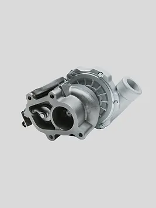

Turbocharger

Ціна: $76
Країна: Германія
Постачальник: AUTOPARTSE
Кількість в наявності: 200
Опис:
Турбонаддувач - це високоефективний пристрій, який використовується для збільшення потужності та
продуктивності двигуна автомобіля. Цей компонент забезпечує більше повітря в двигун, що дозволяє
підвищити його продуктивність і покращити динаміку руху.
Особливості:
Збільшення потужності: Турбонаддувач дозволяє збільшити потужність двигуна, шляхом створення
додаткового наддува, що дозволяє автомобілю рухатися швидше та ефективніше.
Покращена ефективність пального: Завдяки оптимізації процесу згоряння пального, використання
турбонаддувача може призвести до зменшення споживання пального, що робить автомобіль більш
економічним у використанні.
Висока надійність: Турбонаддувачі виготовляються з високоякісних матеріалів і проходять
строгі випробування на відповідність стандартам якості, що забезпечує їх надійність і
довговічність.
Характеристики:
Матеріал: Сплави високоякісних сталей
Комплектація: Комплектований всіма необхідними кріпленнями та аксесуарами для монтажу.
Сумісність: Підходить для широкого спектру автомобілів з різними типами двигунів.